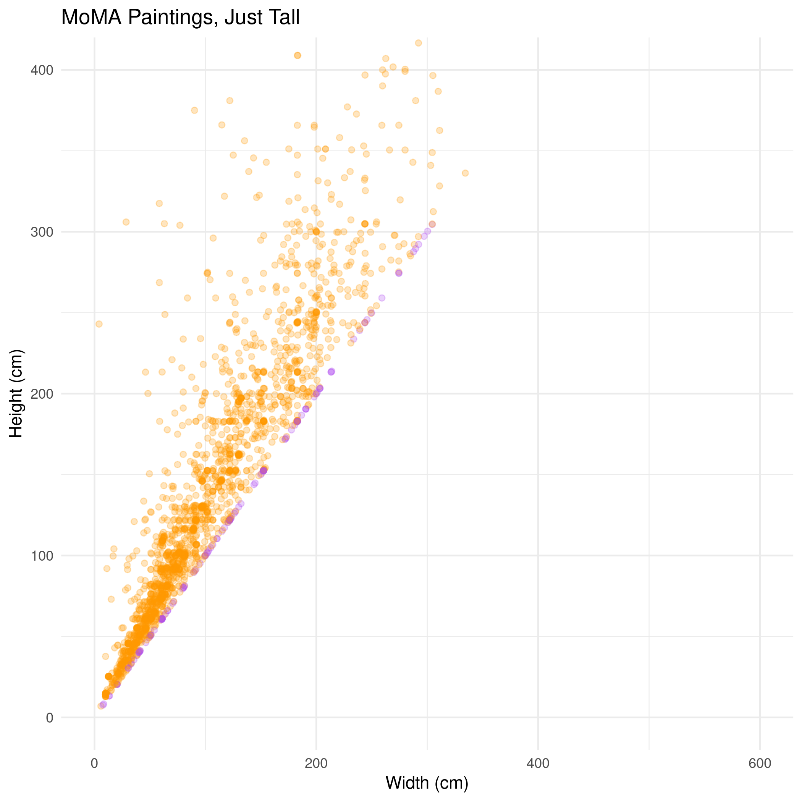
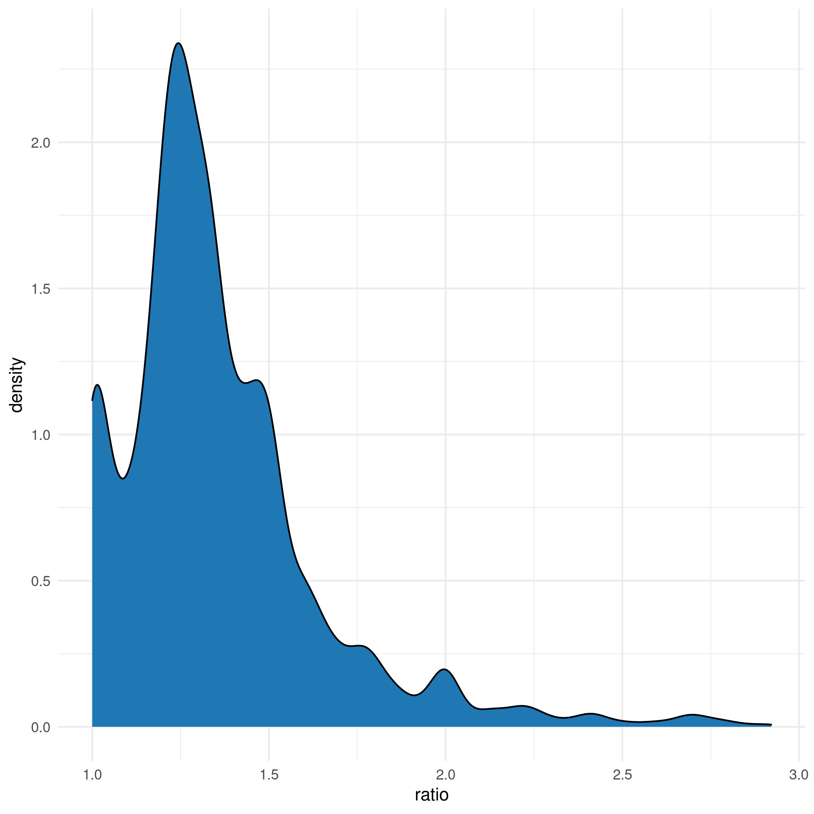
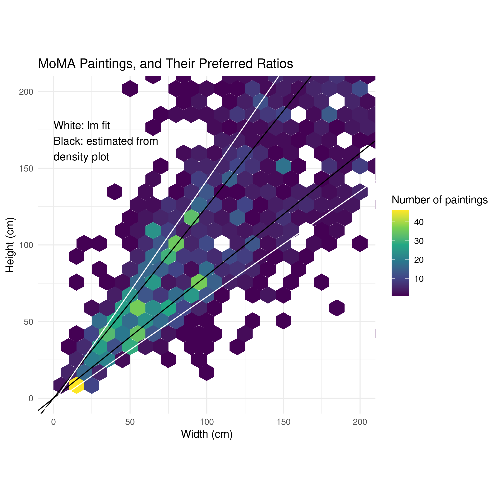

This was an early assignment, just getting used to working with data in R. Nevertheless, I did a fun little investigation of the ratios of paintings, and if artists had a preferred ratio (or at least, if the curators of MoMA do).
First I load the data and flip all paintings to be taller than they are wide.
library(tidyverse)
library(ggplot2)
moma <- read_csv('data/artworks-cleaned.csv')
moma_symm <- moma %>%
mutate(symm_width = if_else(width_cm < height_cm, width_cm, height_cm),
symm_height = if_else(width_cm < height_cm, height_cm, width_cm))
moma_symm %>%
mutate(longer_than_wide = symm_height <= symm_width) %>%
ggplot(aes(x = symm_width, y = symm_height, color = longer_than_wide)) +
theme_minimal() +
geom_point(alpha = 0.25) +
coord_cartesian(xlim = c(0, 600), ylim = c(0, 400)) +
scale_color_manual(values = c("#FF9900", "#B14CF0")) +
theme(legend.position = 'none') +
xlab('Width (cm)') +
ylab('Height (cm)') +
ggtitle('MoMA Paintings, Just Tall')

It does seem that there’s a slight preference for a certain line. Using a density plot we can do a bit more investigation into what the exact ratio might be.moma_symm %>%
mutate(ratio = symm_height/symm_width) %>%
filter(ratio < 3) %>%
ggplot(aes(x = ratio)) +
geom_density(fill = '#1f77b4', color = 'black') +
theme_minimal()

Surprisingly, it does not seem that the preferred ratio is the golden ratio! Shows what I know.
Anyway, we can fit some lines for some of the peaks on the plot of ratios and see how close we got. Let’s plot a linear fit of the flipped data, too.
ratio_model <- moma_symm %>%
select(symm_height, symm_width) %>%
lm('symm_height ~ symm_width', data = .)
moma %>%
filter(width_cm < 250 & height_cm < 250) %>%
mutate(longer_than_wide = height_cm <= width_cm) %>%
ggplot(aes(x = width_cm, y = height_cm)) +
theme_minimal() +
geom_hex(bins = 25) +
geom_abline(intercept = 0, slope = 1.25) +
geom_abline(intercept = 0, slope = 0.8) +
geom_abline(intercept = -2.875741, slope = 1.448946, color = 'white') +
geom_abline(intercept = -2.875741, slope = 1/1.448946, color = 'white') +
scale_fill_viridis_c('Number of paintings') +
coord_fixed(xlim = c(0, 200), ylim = c(0, 200)) +
scale_color_manual(values = c("#FF9900", "#B14CF0")) +
xlab('Width (cm)') +
ylab('Height (cm)') +
annotate(
x = 0, y = 168, hjust = 0,
geom = 'text', label = 'White: lm fit\nBlack: estimated from\ndensity plot') +
ggtitle('MoMA Paintings, and Their Preferred Ratios')
